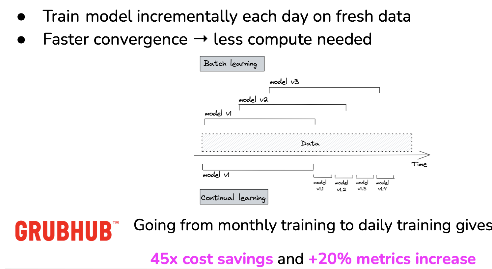
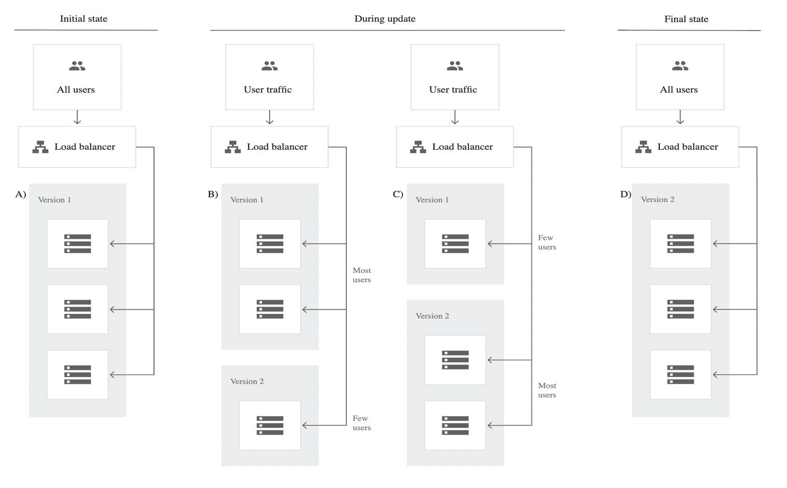
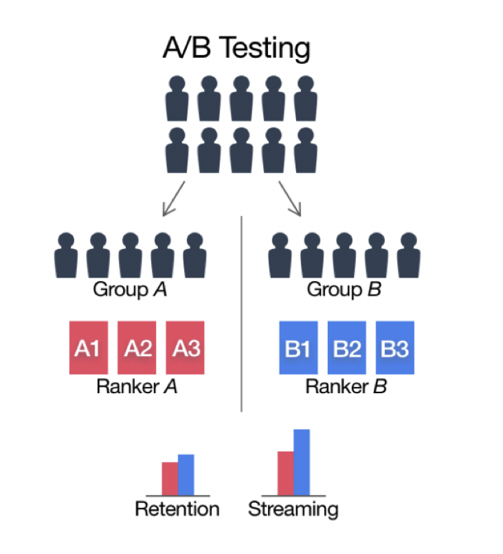
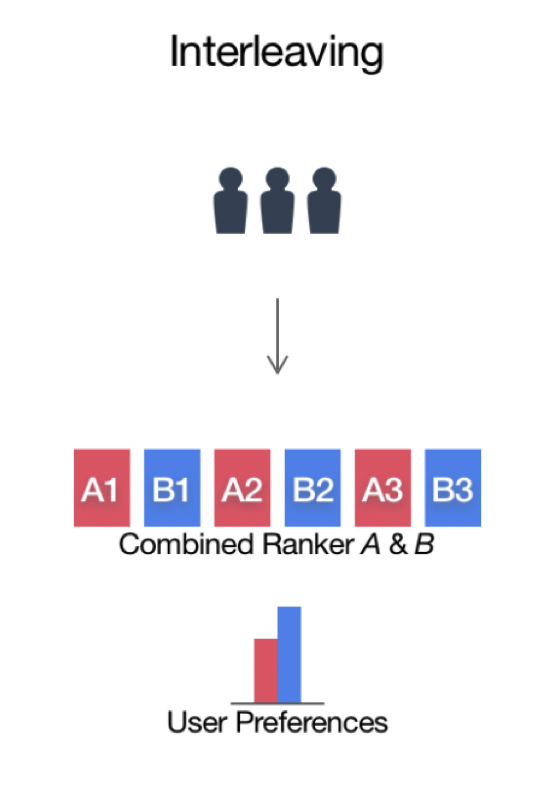
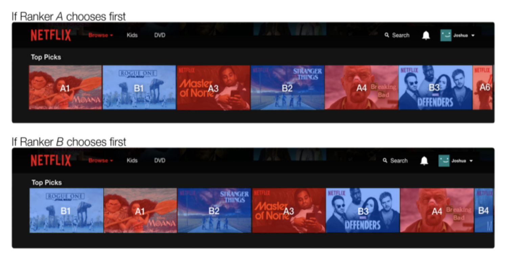
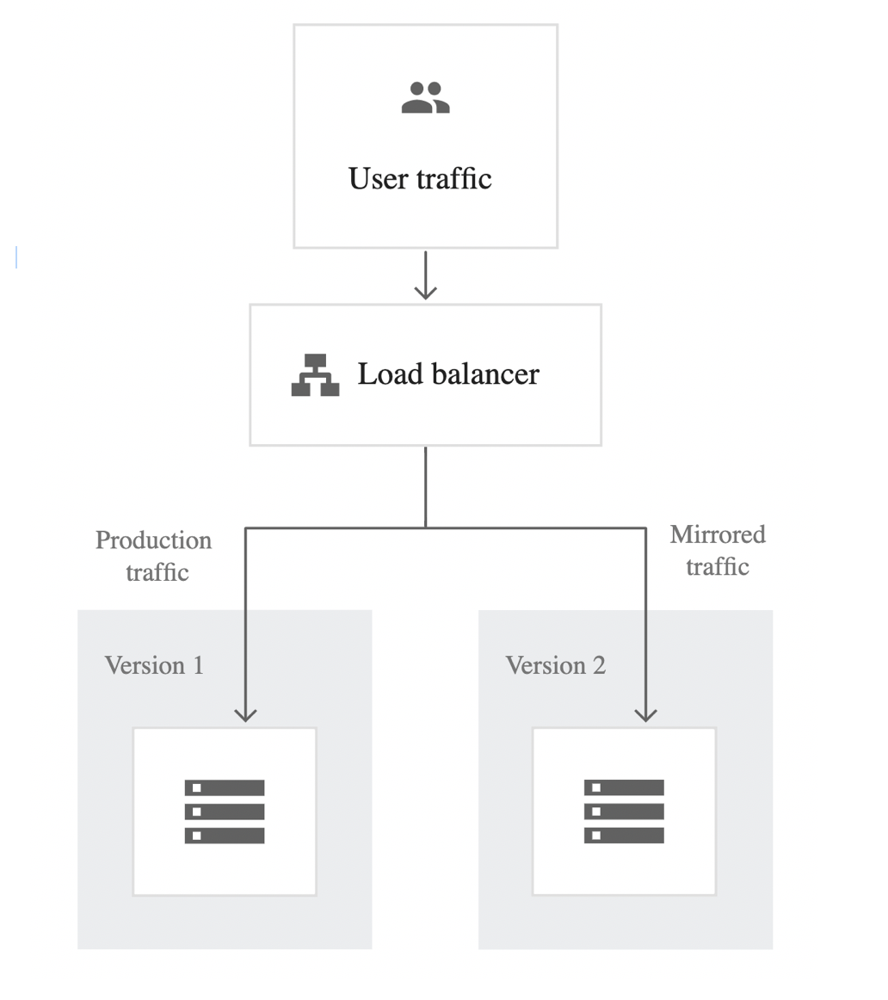

Introduction
- Continual learning: continually adapt models to changing data distributions,
- Set up infrastructure such that models can continuously learn from new data in production,
- Stateful training.
Continual learning use cases
- Rare events:
- Christmas/Black Friday/Prime Day shopping,
- Total Landscaping,
- Continuous cold start (in-session adaptation):
- New users,
- New devices,
- Users not logged in,
- Users rarely logged in.
Continual Learning is good for:
- Natural labels: e.g. user, click -> good prediction,
- Short feedback loops
- Examples:
- RecSys,
- Ranking,
- Ads CTR prediction,
- eDiscovery.
How frequently should a model be updated?
- Very few companies actually update models with each incoming sample:
- Catastrophic forgetting,
- Can get unnecessarily expensive,
- Update models with micro-batches.
How much model’s performance changes if switch from retraining monthly to weekly to daily to hourly?

Evaluating schedule
- Evaluated after a certain period of time:
- Offline evaluation (sanity check),
- Online evaluation: canary analysis, A/B testing, bandits.
Online evaluation
Canary Testing
New model alongside existing system.
- Some traffic is routed to new model,
- Slowly increase the traffic to new model.

A/B Testing
See A/B testing.
New model alongside existing system.
- A percentage of traffic is routed to new model based on routing rules,
- Control target audience & monitor any statistically significant differences in user behavior,
- Can have more than 2 versions.

Interleaved Experiments
Especially useful for ranking/recsys.
- Take recommendations from both model A & B,
- Mix them together and show them to users,
- See which recommendations are clicked on.

Example with Netflix:

Shadow Testing
New model in parallel with existing system.
- New model’s predictions are logged, but not show to users
- Switch to new model when results are satisfactory

Resources
See: